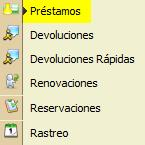
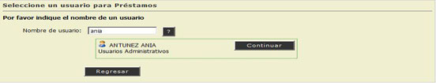
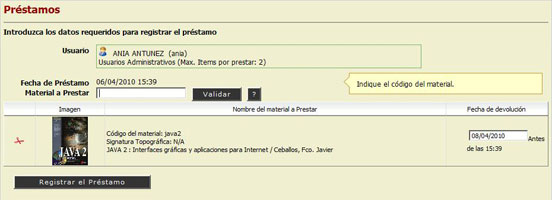
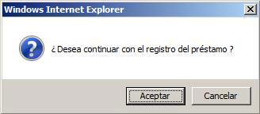
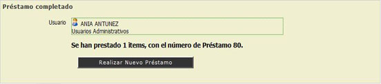

2.1. Préstamos
En esta opción el Administrador del Sistema podrá realizar el Trámite de Préstamos del Material a los Usuarios Registrados en la Institución.
REQUISITO: Para realizar un Préstamo deberá contar con un Nombre de Usuario.

- Escribir el Nombre de Usuario, Teclee [Enter].
- Si el usuario no existe el sistema mostrará un Mensaje de Alerta ("El usuario no fue encontrado").
- Si el usuario existe, el sistema mostrará el Nombre Completo del Usuario. (Continuar Paso No. 2)
- Hacer "Clic" en la opción [Continuar].

- Escribir el Código o Ítem del Material a Prestar, Hacer "Clic" en la opción [Validar].
- Si el Código o Ítem del Material no fue encontrado, el sistema mostrará un Mensaje de Alerta.
- Si el Código o Ítem de Material fue encontrado, mostrara las caracteristicas del material a prestar. (Continuar Paso No. 6)

- El Sistema mostrará automáticamente la Fecha Límite de Devolución del Material.
- Hacer "Clic" en la opción [Registrar Préstamo].
- El Sistema mostrará una pantalla que indicará que el Prestamo fue Completado y Si desea un Nuevo Prestamo.

NOTA: El Botón con el Símbolo de Interrogación (?) , puede ayudarnos a Localizar o Consultar un Usuario de la Institución o un Ítem de un Material.
Vea También: DEVOLUCIONES, DEVOLUCIONES RAPIDAS.